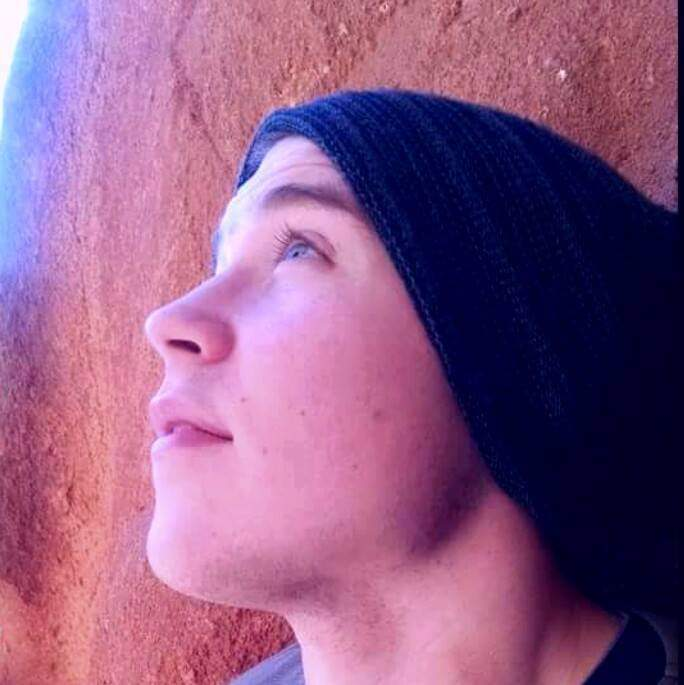

Boyd Stinnett | WDD 130
Hello, my name is Boyd Stinnett and I am from Pittsburgh, Pennsylvania. I am currently thirty years old and pursuing my second bachelor's degree in software development. My first bachelor's degree was in biochemistry from Utah State University. I worked at a pharmaceutical company in a laboratory for a few years but really did not enjoy my job. It was only when a friend showed me the basics of programming in Python that I became extremely interested in pursuing a career in software development. I'm prety early on in my software development education but I have really enjoyed every class. to school and taking on more debt but BYU Pathway has allowed it to be affordable for me.